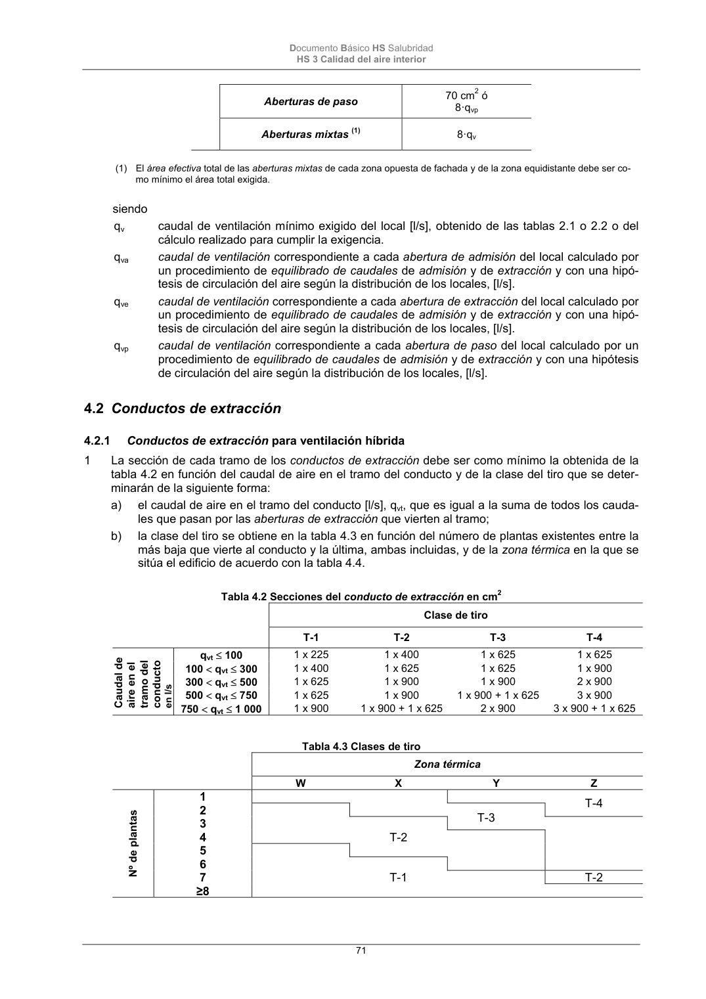

DB-HS Salubridad · edición 2022-06-14 · capa oficial
Documento DB-HS-oficial · SHA-256 del PDF 68df3caacc95f71aee2ec1ba7b2c65ae66155c21e3a8785521b8fdd4fd640d3b
Página física 71 de 184.
Copia fiel del PDF fuente · Fuente oficial
Ficha de la disposición en la fuente oficial
Formato: Texto de la página (Markdown)
Documento Básico HS Salubridad HS 3 Calidad del aire interior 71 Aberturas de paso 70 cm2 ó 8·qvp Aberturas mixtas (1) 8·qv (1) El área efectiva total de las aberturas mixtas de cada zona opuesta de fachada y de la zona equidistante debe ser co- mo mínimo el área total exigida. siendo qv caudal de ventilación mínimo exigido del local [l/s], obtenido de las tablas 2.1 o 2.2 o del cálculo realizado para cumplir la exigencia. qva caudal de ventilación correspondiente a cada abertura de admisión del local calculado por un procedimiento de equilibrado de caudales de admisión y de extracción y con una hipó- tesis de circulación del aire según la distribución de los locales, [l/s]. qve caudal de ventilación correspondiente a cada abertura de extracción del local calculado por un procedimiento de equilibrado de caudales de admisión y de extracción y con una hipó- tesis de circulación del aire según la distribución de los locales, [l/s]. qvp caudal de ventilación correspondiente a cada abertura de paso del local calculado por un procedimiento de equilibrado de caudales de admisión y de extracción y con una hipótesis de circulación del aire según la distribución de los locales, [l/s]. 4.2 Conductos de extracción 4.2.1 Conductos de extracción para ventilación híbrida 1 La sección de cada tramo de los conductos de extracción debe ser como mínimo la obtenida de la tabla 4.2 en función del caudal de aire en el tramo del conducto y de la clase del tiro que se deter- minarán de la siguiente forma: a) el caudal de aire en el tramo del conducto [l/s], qvt, que es igual a la suma de todos los cauda- les que pasan por las aberturas de extracción que vierten al tramo; b) la clase del tiro se obtiene en la tabla 4.3 en función del número de plantas existentes entre la más baja que vierte al conducto y la última, ambas incluidas, y de la zona térmica en la que se sitúa el edificio de acuerdo con la tabla 4.4. Tabla 4.2 Secciones del conducto de extracción en cm2 Clase de tiro T-1 T-2 T-3 T-4 Caudal de aire en el tramo del conducto en l/s qvt 100 1 x 225 1 x 400 1 x 625 1 x 625 100 qvt 300 1 x 400 1 x 625 1 x 625 1 x 900 300 qvt 500 1 x 625 1 x 900 1 x 900 2 x 900 500 qvt 750 1 x 625 1 x 900 1 x 900 + 1 x 625 3 x 900 750 qvt 1 000 1 x 900 1 x 900 + 1 x 625 2 x 900 3 x 900 + 1 x 625 Tabla 4.3 Clases de tiro Zona térmica W X Y Z Nº de plantas 1 T-4 2 3 4 T-2 5 6 7 T-1 T-2 ≥8 T-3

Datos candidatos: compruebe celdas y notas en el PDF.